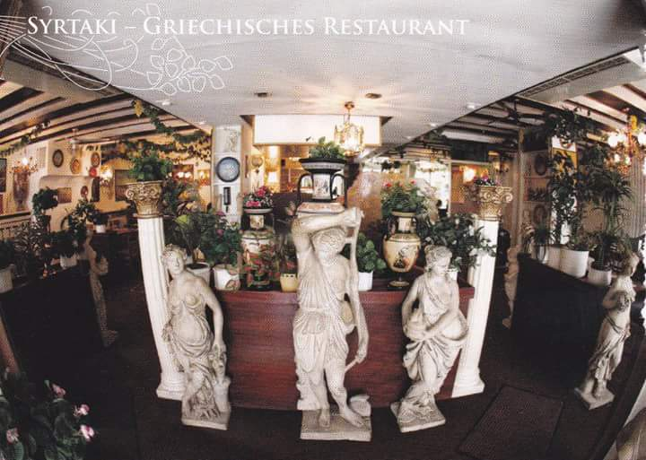

Im Restaurant SYRTAKI in Karlsruhe bieten wir Ihnen, seit 1988, ausgezeichnete griechische Küche in sympathischer Atmosphäre.

Letztes Update: 24.01.2021
Liebe Gäste,
wir bieten Ihnen auch während des Lockdowns sämtliche Speisen zur Abholung an.
Unsere Küche ist täglich von 11.30 bis 15.00 Uhr und von 16.00 bis 20.00 Uhr geöffnet!
Unsere Mittagskarte gilt von Montag bis Samstag, außer an Feiertagen.
Wir freuen uns darauf, Sie bald wieder persönlich in unserem Restaurant bewirten zu dürfen.
Bleiben Sie gesund!


blok5